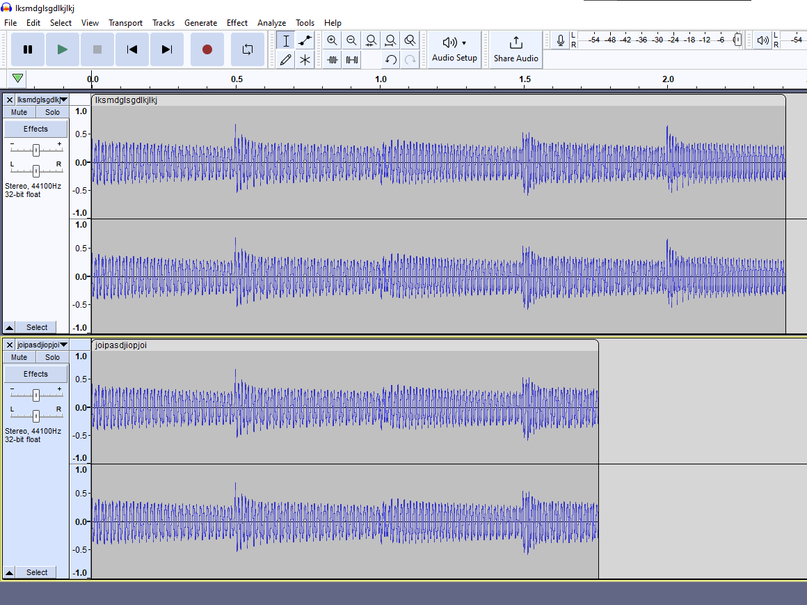

Ho provato ad prototipare i controlli con l'interruzione se non si suona in tempo la nota durante la riproduzione di una traccia:
In principio funziona abbastanza bene (qui sto utilizzando il convertitore digitale, domani dovrebbe arrivare quello hardware) ma bisogna introdurre un fattore di correzzione per ritardare la valutazione dell'input (o meno) in base al delay di input, altrimenti l'effetto e' abbastanza disorientante come si vede nel video: stavo pensando di suonare con il tempismo corretto, ma aggiungendo il ritardo di input arrivavo sempre in ritardo e il playback si ferma ogni nota (che e' l'effetto desiderato quando l'utente e' effettivamente in ritardo, ma il programma per ora non e' cosciente del delay di input/output).
Una delle prime cose fatte nel progetto (il 10 marzo) e' stata abbozzare un pipe tra l'audio di AlphaSynth e Unity, ma da allora ho avuto problemi a farlo funzionare correttamente, fino ad oggi mi ero limitato a fare un fix con valori hardcoded stile "funziona sulla mia macchina", ma oggi mi sono impegnato a risolvere il problema una volta per tutte.
Il primo passo e' stato entrare nell'headspace dei dati audio e come sono strutturati e generati (che non e' stato banale dato che sono dovuto andare a vedere alcune cose nel codice sorgente di AlphaSynth dal momento che molte cose non erano documentate e per questo non si capiva come utilizzare i dati forniti dai callback), mente l'altro lato e' stato capire per quale motivo, anche dopo avere i dati generati e corretti Unity producesse audio spazzatura. La seguente immagine mostra uno snippet di audio campionato direttamente dal sintetizzatore e scritto su file per il debugging:
Alla fine il problema era che Unity e' documentato in modo pessimo, e il valore delle dimensioni del buffer DSP indicato dalla funzione appposita e' relativo ad 1 canale audio (quindi va moltiplicato per il numero dei canali), mentre il buffer DSP effettivo fornito dal callback e' delle dimensioni doppie (come il numero di canali audio), ma questo non corrisponde con il valore riportato dal metodo precedentemente menzionato.